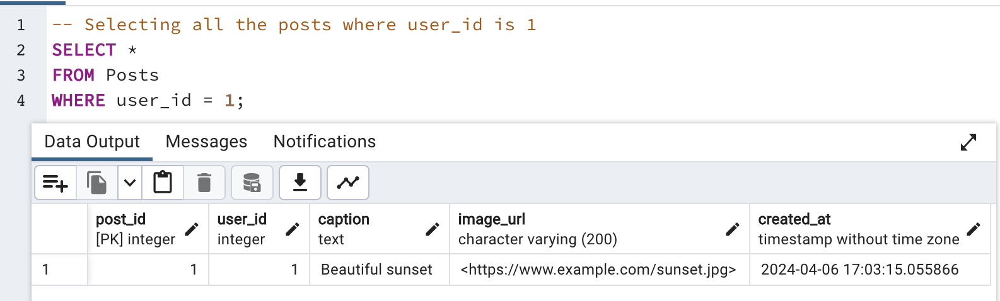
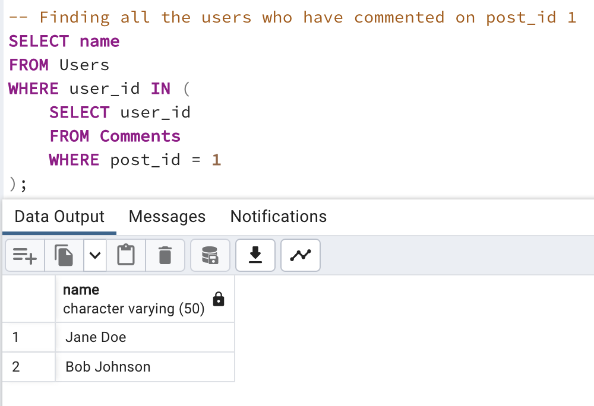
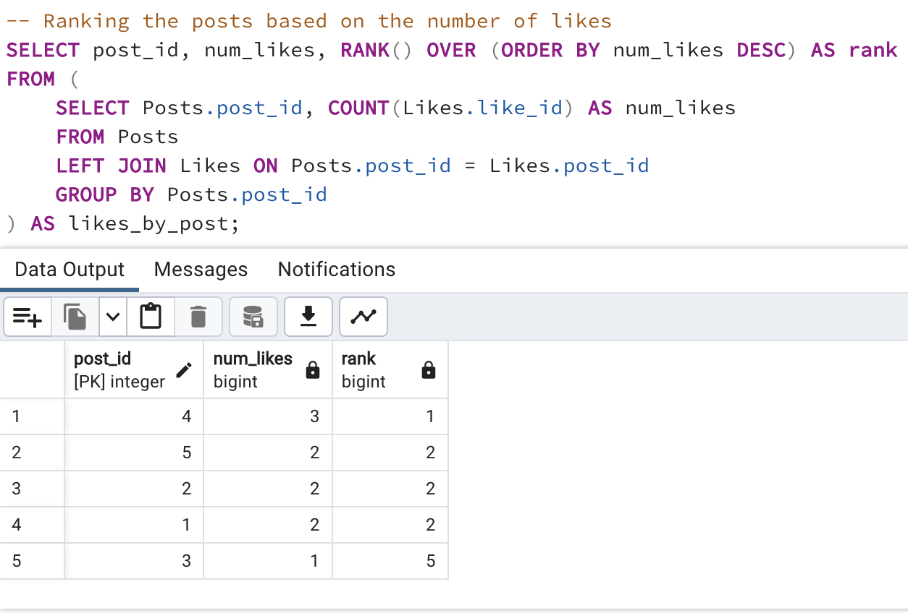
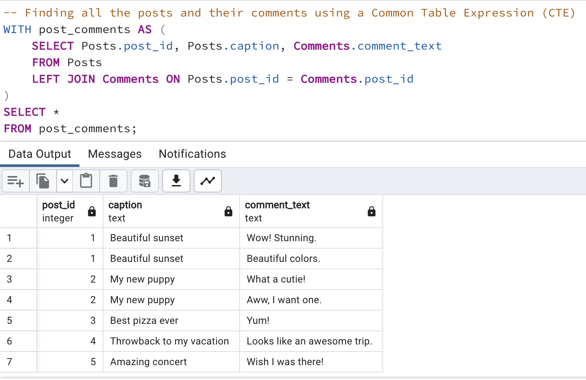
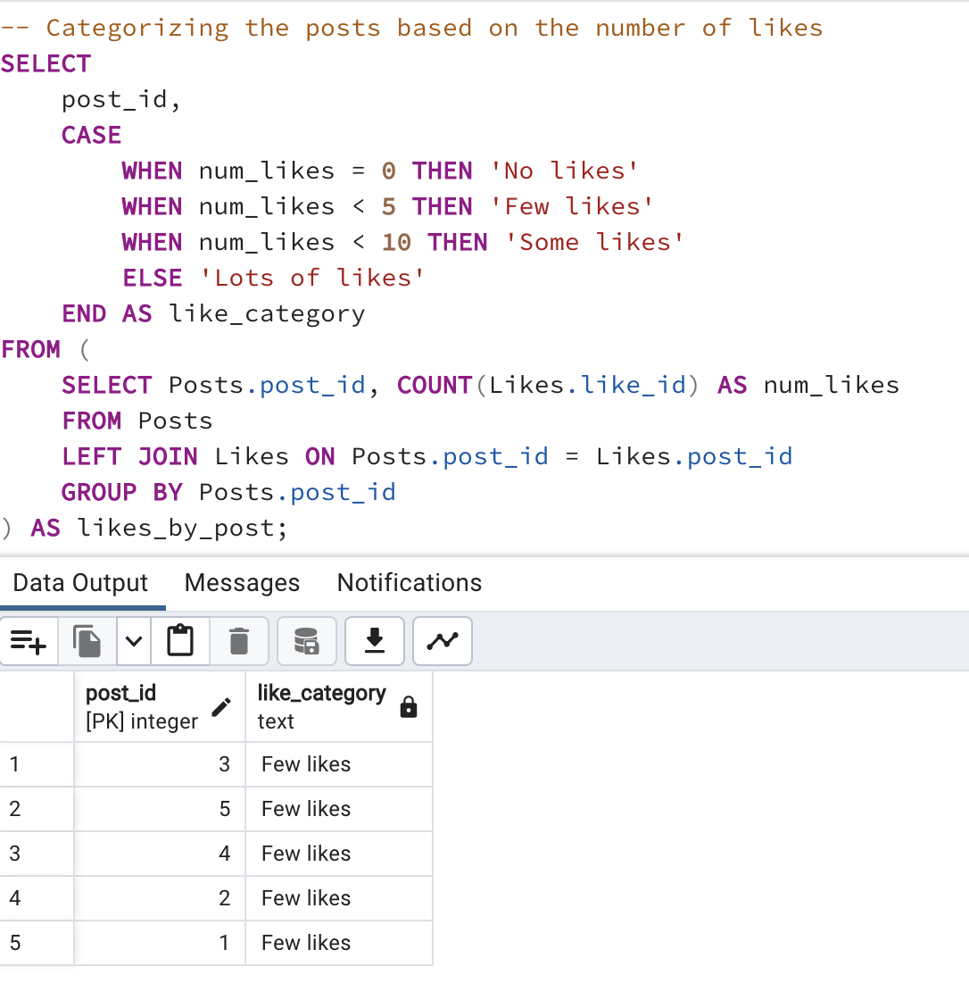

Instagram Data Model & Analytics Project
In this project, our goal is to design a comprehensive data model for Instagram using PostgreSQL. We'll start by conceptualizing the necessary tables and relationships to accurately represent the Instagram ecosystem within a database.
Firstly, we'll translate our conceptual model into PostgreSQL syntax by creating the required tables. This involves defining the structure of each table, including primary keys, foreign keys, and appropriate data types.
Once our tables are set up, we'll generate SQL create table statements to implement our database schema within PostgreSQL.
Next, we'll populate our tables with sample data to simulate a realistic Instagram dataset. This step is crucial for testing our queries and ensuring that our data model functions as intended.
To demonstrate the dynamic nature of our data model, we'll provide examples of how to update existing data within our tables using SQL update statements.
Moving into analytics, we'll explore SQL queries with various conditions such as where clause for filtering, orderby for sorting, group by for aggregating data, and having clause for further filtering aggregated results.
Additionally, we'll explain different aggregation functions available in PostgreSQL to summarize and analyze our data effectively.
To deepen our understanding of SQL capabilities, we'll cover advanced topics including subqueries, window functions, Common Table Expressions (CTEs), and the use of case statements for conditional logic.
Furthermore, we'll delve into date manipulation techniques such as date casting and working with date functions to handle timestamps, which are essential for time-based analysis in Instagram-like applications.
By the end of this project, we aim to have a robust data model that not only represents Instagram's features accurately but also showcases the powerful capabilities of PostgreSQL for managing and analyzing complex datasets. Let's dive in and get started!
Designing Data Model
Users
| Column |
Type |
Constraints |
| user_id |
SERIAL |
PRIMARY KEY |
| name |
VARCHAR(50) |
NOT NULL |
| email |
VARCHAR(100) |
UNIQUE NOT NULL |
| phone_number |
VARCHAR(20) |
UNIQUE |
Posts
| Column |
Type |
Constraints |
| post_id |
SERIAL |
PRIMARY KEY |
| user_id |
INTEGER |
NOT NULL,FOREIGN KEY (user_id) REFERENCES Users(user_id) |
| caption |
Text |
| image_url |
VARCHAR(200) |
|
| created_at |
TIMESTAMP |
DEFAULT CURRENT_TIMESTAMP |
Comments
| Column |
Type |
Constraints |
| comment_id |
SERIAL |
PRIMARY KEY |
| post_id |
INTEGER |
NOT NULL,FOREIGN KEY (post_id) REFERENCES Users(user_id) |
| user_id |
INTEGER |
NOT NULL,FOREIGN KEY (user_id) REFERENCES Users(user_id) |
| comment_text |
Text |
|
| created_at |
TIMESTAMP |
LIKES
| Column |
Type |
Constraints |
| like_id |
SERIAL |
PRIMARY KEY |
| post_id |
INTEGER |
NOT NULL,FOREIGN KEY (post_id) REFERENCES Posts(user_id) |
| user_id |
INTEGER |
NOT NULL,FOREIGN KEY (user_id) REFERENCES Users(user_id) |
| created_at |
TIMESTAMP |
DEFAULT CURRENT_TIMESTAMP |
Followers
| Column |
Type |
Constraints |
| follower_id |
SERIAL |
PRIMARY KEY |
| USER_id |
INTEGER |
NOT NULL,FOREIGN KEY (user_id) REFERENCES users(user_id) |
| follower_user_id |
INTEGER |
NOT NULL,FOREIGN KEY (follower_user_id) REFERENCES Users(user_id) |
| created_at |
TIMESTAMP |
DEFAULT CURRENT_TIMESTAMP |
SQL QUERIES
Creating tables
CREATE TABLE Users (
user_id SERIAL PRIMARY KEY,
name VARCHAR(50) NOT NULL,
email VARCHAR(100) UNIQUE NOT NULL,
phone_number VARCHAR(20) UNIQUE
);
CREATE TABLE Posts (
post_id SERIAL PRIMARY KEY,
user_id INTEGER NOT NULL,
caption TEXT,
image_url VARCHAR(200),
created_at TIMESTAMP DEFAULT CURRENT_TIMESTAMP,
FOREIGN KEY (user_id) REFERENCES Users(user_id)
);
CREATE TABLE Comments (
comment_id SERIAL PRIMARY KEY,
post_id INTEGER NOT NULL,
user_id INTEGER NOT NULL,
comment_text TEXT NOT NULL,
created_at TIMESTAMP DEFAULT CURRENT_TIMESTAMP,
FOREIGN KEY (post_id) REFERENCES Posts(post_id),
FOREIGN KEY (user_id) REFERENCES Users(user_id)
);
CREATE TABLE Likes (
like_id SERIAL PRIMARY KEY,
post_id INTEGER NOT NULL,
user_id INTEGER NOT NULL,
created_at TIMESTAMP DEFAULT CURRENT_TIMESTAMP,
FOREIGN KEY (post_id) REFERENCES Posts(post_id),
FOREIGN KEY (user_id) REFERENCES Users(user_id)
);
CREATE TABLE Followers (
follower_id SERIAL PRIMARY KEY,
user_id INTEGER NOT NULL,
follower_user_id INTEGER NOT NULL,
created_at TIMESTAMP DEFAULT CURRENT_TIMESTAMP,
FOREIGN KEY (user_id) REFERENCES Users(user_id),
FOREIGN KEY (follower_user_id) REFERENCES Users(user_id)
);
Inserting Data
-- Inserting into Users table
INSERT INTO Users (name, email, phone_number)
VALUES
('John Smith', 'johnsmith@gmail.com', '1234567890'),
('Jane Doe', 'janedoe@yahoo.com', '0987654321'),
('Bob Johnson', 'bjohnson@gmail.com', '1112223333'),
('Alice Brown', 'abrown@yahoo.com', NULL),
('Mike Davis', 'mdavis@gmail.com', '5556667777');
-- Inserting into Posts table
INSERT INTO Posts (user_id, caption, image_url)
VALUES
(1, 'Beautiful sunset', ''),
(2, 'My new puppy', ''),
(3, 'Delicious pizza', ''),
(4, 'Throwback to my vacation', ''),
(5, 'Amazing concert', '');
-- Inserting into Comments table
INSERT INTO Comments (post_id, user_id, comment_text)
VALUES
(1, 2, 'Wow! Stunning.'),
(1, 3, 'Beautiful colors.'),
(2, 1, 'What a cutie!'),
(2, 4, 'Aww, I want one.'),
(3, 5, 'Yum!'),
(4, 1, 'Looks like an awesome trip.'),
(5, 3, 'Wish I was there!');
-- Inserting into Likes table
INSERT INTO Likes (post_id, user_id)
VALUES
(1, 2),
(1, 4),
(2, 1),
(2, 3),
(3, 5),
(4, 1),
(4, 2),
(4, 3),
(5, 4),
(5, 5);
-- Inserting into Followers table
INSERT INTO Followers (user_id, follower_user_id)
VALUES
(1, 2),
(2, 1),
(1, 3),
(3, 1),
(1, 4),
(4, 1),
(1, 5),
(5, 1);
Updating Data

Analytical Queries
Group BY and HAVING

SubQuery

Window Function

CTE

Case Statement

Data Casting Working with Dates

Conclusion
In this project, I took on the task of designing a data model for Instagram using PostgreSQL. I began by conceptualizing the structure and relationships needed for the database and then translated this into PostgreSQL syntax by creating different tables.
To populate the database, I generated SQL create table statements and inserted relevant data into the tables. I showcased examples of how to update existing data within these tables to reflect dynamic changes.
For a deeper analysis, I delved into analytics using SQL queries with conditions like where clause, ordering with orderby, grouping with group by, and filtering with the having clause. I also explained various aggregation functions that can be used to summarize data effectively.
To enhance the complexity of my queries, I explored advanced SQL techniques such as subqueries, window functions, Common Table Expressions (CTEs), and utilized case statements for conditional logic. Additionally, I discussed methods for casting and manipulating dates, illustrating how to work seamlessly with date data in PostgreSQL. This comprehensive approach allowed me to create a robust and scalable data model tailored for Instagram's needs.